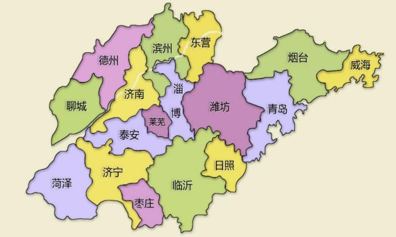

关于山东

山东省（Shandong），简称“鲁”，中华人民共和国省级行政区，省会济南市，地处中国华东地区的沿海，濒临渤海和黄海，自北而南与河北、河南、安徽、江苏4省接壤。截至2022年，山东省下辖16个地级市，共58个市辖区、26个县级市、52个县，664个街道、1092个镇、68个乡，常住人口10162.7万人。
山东省陆域面积15.58万平方千米，地形以平原丘陵为主，中南部山地突起，西南、西北低洼平坦，东部是缓丘起伏的山东半岛，西部及北部属华北平原；地跨淮河、黄河、海河、小清河和胶东五大水系；属暖温带季风气候。山东省是工业大省，拥有41个工业大类，中国重要的工业基地和北方地区经济发展的战略支点 。山东半岛城市群对外毗邻日韩、面向东北亚、联通“一带一路”。